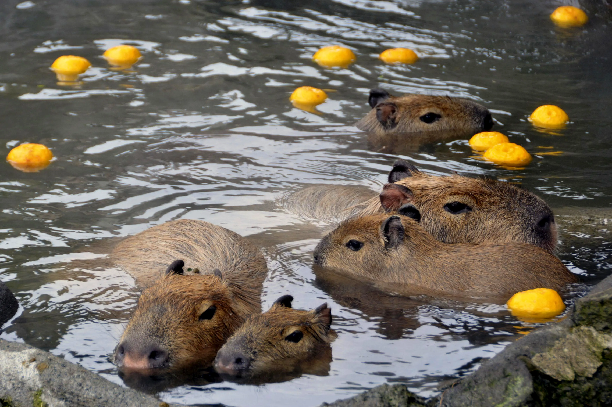
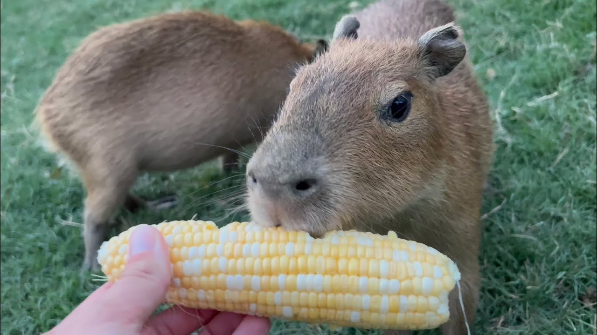
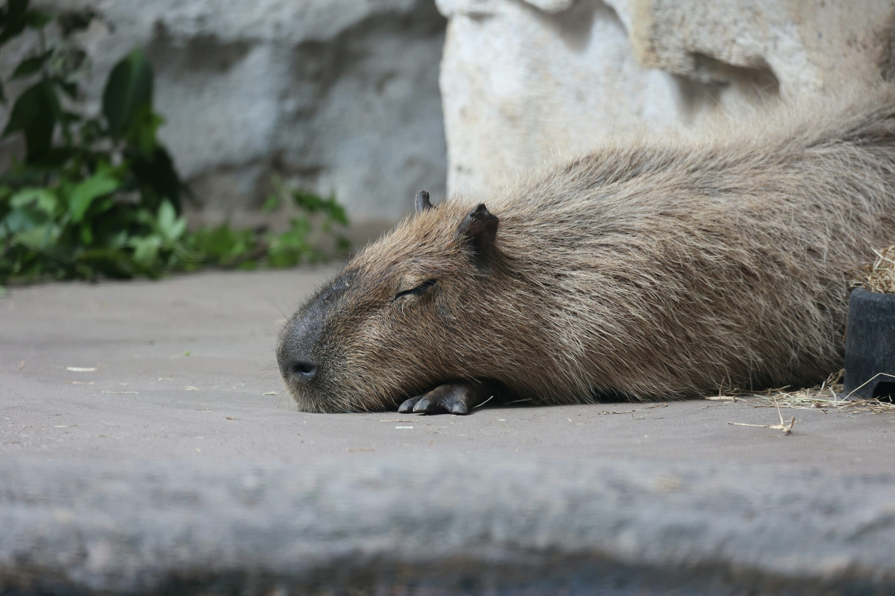
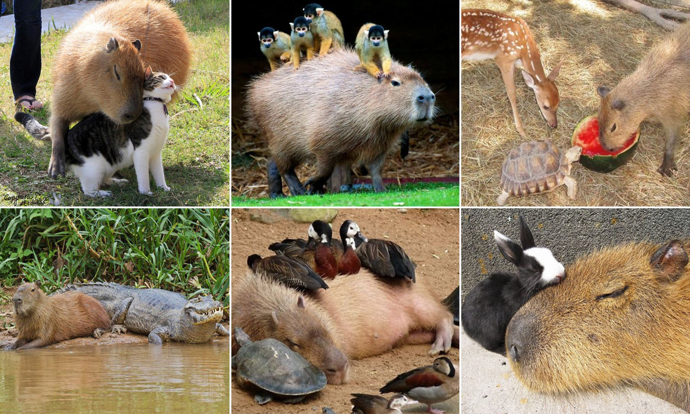

capy.com
We are a Capybara Agency

Bath
Capybara enjoy soaking in water to relax and cool off. They love baths, especially in warm springs and with some oranges.

Eat
They eat mostly grass, fruits, and vegetables. Capybara spend a lot of time grazing and chewing. Look how cute they are!

Sleep
Capybara sleep in short naps throughout the day and night, often near their group.

Be Friendly
They are very friendly and social, often seen cuddling or relaxing with other animals.